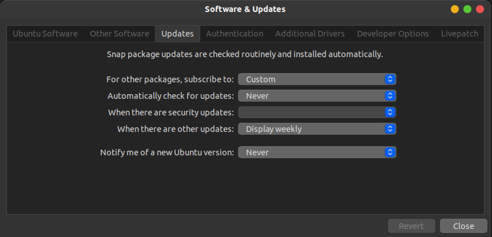

请访问原文链接：如何禁止 Ubuntu 26.04 自动更新，删除更新提示和缓存 查看最新版。原创作品，转载请保留出处。
作者主页：sysin.org
Ubuntu 的软件自动更新有点强悍，一个 1 G 多的映像，自动更新后，体积暴增到 10 G 以上，任何未经许可的软件更新（包括静默下载）都是不可接受的。以下方法可以彻底禁止 Ubuntu 的自动更新。
特别提示：Ubuntu 在安装的时候会联网检查更新，并自动安装最新版，请务必断网安装！！！
Ubuntu Server
一般步骤
修改配置文件
1
2
3
4
5
6
7
8
9
10
11关闭 Update-Package-Lists
sudo sed -i.bak 's/1/0/' /etc/apt/apt.conf.d/10periodic
关闭 unattended-upgrades
sudo sed -i.bak 's/1/0/' /etc/apt/apt.conf.d/20auto-upgrades
# 上一条也可以通过以下命令 TUI 界面选择 No
sudo dpkg-reconfigure unattended-upgrades
# 禁用 unattended-upgrades 服务
sudo systemctl stop unattended-upgrades
sudo systemctl disable unattended-upgrades
# 可选：移除 unattended-upgrades (sysin)
sudo apt remove unattended-upgrades清空 apt 缓存
1
2
3
4
5
6可选：清空缓存
sudo apt autoremove #移除不在使用的软件包
sudo apt clean && sudo apt autoclean #清理下载文件的存档
sudo rm -rf /var/cache/apt
sudo rm -rf /var/lib/apt/lists
sudo rm -rf /var/lib/apt/periodic重置更新通知（更新提示数字）
如果执行
sudo apt update命令后，登录会提示如下：1
2
3257 updates can be installed immediately.
133 of these updates are security updates.
To see these additional updates run: apt list --upgradable恢复原始状态：
1
2
3
4
5sudo vi /var/lib/update-notifier/updates-available
第一行是空白
0 updates can be installed immediately.
0 of these updates are security updates.或者直接删除文件（推荐）：
1
sudo rm -f /var/lib/update-notifier/updates-available
删除后提示如下（
sudo apt update后会自动恢复）：1
2The list of available updates is more than a week old.
To check for new updates run: sudo apt update
禁用内核更新
快速命令
以下一条命令即可禁用内核更新，后面是一些相关命令，仅供查阅。
1 | 禁用内核更新 |
可选：在 unattended-upgrades 配置文件中禁用内核更新
1 | sudo vi /etc/apt/apt.conf.d/50unattended-upgrades |
查看安装的内核
1 | dpkg --list | grep linux- |
清理多余的内核
1 | sudo apt purge linux-image-x.x.x-x # x.x.x-x 代表内核版本数字 |
查看可用的内核更新命令
1 | apt list --upgradable | grep linux- |
Ubuntu Desktop
Ubuntu Desktop 与 Server 版的上述配置是一致的。只是增加了额外的更新管理器的图形界面配置。
图形界面配置

图形界面配置某些选项的储存值为 2，所以修改配置文件多加一句指令为妥：
（以下两个配置文件在 Server 版默认配置文件为 2 条，Desktop 版默认配置文件为 4 条）
1
2
3
4
5
6关闭 Update-Package-Lists
sudo sed -i 's/1/0/' /etc/apt/apt.conf.d/10periodic
sudo sed -i 's/2/0/' /etc/apt/apt.conf.d/10periodic
关闭 unattended-upgrades
sudo sed -i 's/1/0/' /etc/apt/apt.conf.d/20auto-upgrades
sudo sed -i 's/2/0/' /etc/apt/apt.conf.d/20auto-upgrades可选：删除更新通知程序
1
2删除更新通知程序
sudo apt remove update-notifier
附录
相关文章：
- 如何屏蔽 iOS 软件自动更新，去除更新通知和标记
- 如何禁止 macOS 自动更新，去除更新标记和通知
- 如何禁止 Ubuntu 26.04 自动更新，删除更新提示和缓存
- 如何禁用 Firefox 自动更新 (macOS, Linux, Windows)
- 如何禁用 Google Chrome 自动更新 (macOS, Linux, Windows)
- 如何禁用 Microsoft Edge 自动更新 (Windows, Linux, macOS)

文章用于推荐和分享优秀的软件产品及其相关技术，所有软件默认提供官方原版（免费版或试用版），免费分享。对于部分产品笔者加入了自己的理解和分析，方便学习和研究使用。任何内容若侵犯了您的版权，请联系作者删除。如果您喜欢这篇文章或者觉得它对您有所帮助，或者发现有不当之处，欢迎您发表评论，也欢迎您分享这个网站，或者赞赏一下作者，谢谢！
 支付宝赞赏
支付宝赞赏  微信赞赏
微信赞赏赞赏一下
敬请注册！点击 “登录” - “用户注册”（已知不支持 21.cn/189.cn 邮箱）。 请勿使用联合登录（已关闭）。